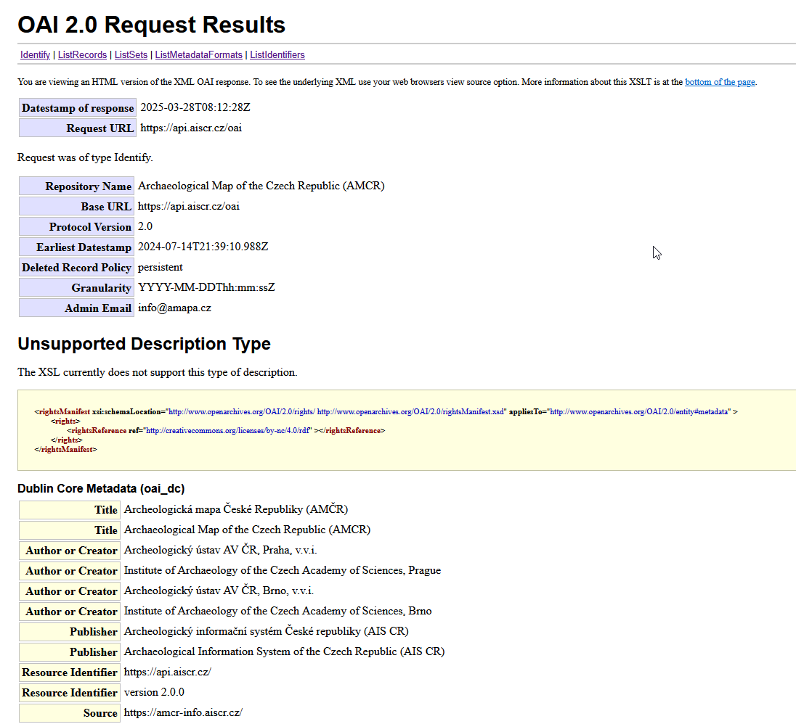

| element | A | B | C | D |
|---|---|---|---|---|
| projekt | stav = 6 | stav = 6 | stav > 0 | ✔ |
| projekt/oznamovatel | ✘ | ✘ | stav = 1 OR my organisation record | ✔ |
| archeologicky_zaznam | stav = 3 | ✔ | ✔ | ✔ |
| let | ✔ | ✔ | ✔ | ✔ |
| adb | stav_pom = 3 | ✔ | ✔ | ✔ |
| dokument | stav = 3 | ✔ | ✔ | ✔ |
| ext_zdroj | stav = 3 | ✔ | ✔ | ✔ |
| pian | stav = 2 | ✔ | ✔ | ✔ |
| samostatny_nalez | stav = 4 | stav = 4 OR my record | stav = 4 OR my organisation record | ✔ |
| uzivatel | ✘ | my record | my record | ✔ |
| heslo | ✔ | ✔ | ✔ | ✔ |
| ruian_kraj | ✔ | ✔ | ✔ | ✔ |
| ruian_okres | ✔ | ✔ | ✔ | ✔ |
| ruian_katastr | ✔ | ✔ | ✔ | ✔ |
| organizace | ✔ | ✔ | ✔ | ✔ |
| osoba | ✔ | ✔ | ✔ | ✔ |
OAI-PMH API
OpenArchives Initiative Protocol for Metadata Harvesting API
API is available here: https://api.aiscr.cz/oai?verb=Identify.
User registration is available here: https://amcr.aiscr.cz/accounts/register/.
Importantv2.2
As of 18 June 2025, version v2.2 of the schema is available.
This guide is valid for version v2.1 (and later) of the service and the schema.
Endpoint for version v2.2 is: https://api.aiscr.cz/2.2/oai
Schema for this version is: https://api.aiscr.cz/schema/amcr/2.2/
Changes in the schema are documented in the XSD file by comments.
Functionality of the service described in this manual remains the same.
Overview
OAI-PMH AMCR API provides metadata from the AMCR database using the OpenArchives Initiative Protocol for Metadata Harvesting (OAI-PMH). The implementation supports two metadata standards:
- Dublin Core – AMCR basic metadata serialised using Dublin Core elements from the DCMI schema for unqualified Dublin Core according to OAI-PMH specification;
- AMCR XML – native format with a complete representation of the whole AMCR database.
The API response is an XML file.
Endpoints
Generic endpoint https://api.aiscr.cz/oai always redirects to the most recent endpoint version, i.e. returns metadata records tranformed consistently to the schema with the highest version.
For the sake of your implementation persistence, we recommend using a specific version of the service, ie. an endpoint https://api.aiscr.cz/x.y/oai with its associated schema at https://api.aiscr.cz/schema/amcr/x.y/, where x is a major version and y is a minor version.
Versions
- v2.2 (2025-06-18) – endpoint
https://api.aiscr.cz/2.2/oaiand schema https://api.aiscr.cz/schema/amcr/2.2/ - v2.1 (2025-03-28) – endpoint
https://api.aiscr.cz/2.1/oaiand schema https://api.aiscr.cz/schema/amcr/2.1/ - v2.0 (2024-07-17) – endpoint
https://api.aiscr.cz/2.0/oaiand schema https://api.aiscr.cz/schema/amcr/2.0/
Access
The access to some metadata is protected by user roles:
- A (anonymous) – anyone on the internet accessing AMCR services,
- B (researcher) – registered user,
- C (archaeologist) – archaeologist from a licensed organisation,
- D (archivist) – authorised AMCR archivist.
Registration to the system is available here.
Accessibility is automatically assessed for each record based on the user’s role, organisational affiliation and the processing state of the record. If the record or part of it is inaccessible, the corresponding element will return an HTTP/1.1 403 Forbidden string. The rules are applied as detailed in the following tables. The first table defines the basic rules for the record to be visible, the second table lists the effects of the limited accessibility defined on the individual record level.
stav – processing state of the record, see Documentation (in Czech language only)
my record – record created by the user
my organisation record – record created by someone from user’s organisation
| element with required role | protected element |
|---|---|
| projekt/pristupnost_pom | projekt/chranene_udaje |
| archeologicky_zaznam/pristupnost | archeologicky_zaznam/chranene_udaje |
| archeologicky_zaznam/pristupnost | archeologicky_zaznam/akce/chranene_udaje |
| archeologicky_zaznam/pristupnost | archeologicky_zaznam/lokalita/chranene_udaje |
| adb/pristupnost_pom | adb/chranene_udaje |
| pian/pristupnost_pom | pian/chranene_udaje |
| samostatny_nalez/pristupnost | samostatny_nalez/chranene_udaje |
Specification
Schema
Schema (XSD) for current version of the service can be found here: https://api.aiscr.cz/schema/amcr/2.1/. The schema follows the AMCR data structure as described here. Main entities are represented as records in individual sets (see below), with all direct children listed in the XML hierarchical structure.
Filters
Sets
Selective querying can be achieved using predefined sets. Description of sets’ contents is available at: https://api.aiscr.cz/2.1/oai?verb=ListSets.
| setSpec | setName | vocabulary |
|---|---|---|
| projekt | Projekty / Projects | ✘ |
| archeologicky_zaznam | Archeologické záznamy / Archaeological Records | ✘ |
| archeologicky_zaznam:akce | Akce / Fieldwork Events | ✘ |
| archeologicky_zaznam:lokalita | Lokality / Sites | ✘ |
| let | Lety / Flights | ✘ |
| adb | Archeologické dokumentační body / Archaeological Documentation Points | ✘ |
| dokument | Dokumenty / Documents | ✘ |
| dokument:3d | Knihovna 3D / 3D Library | ✘ |
| ext_zdroj | Externí zdroje / External Sources | ✘ |
| pian | PIAN / Spatial Units | ✘ |
| samostatny_nalez | Samostatné nálezy / Individual Finds | ✘ |
| uzivatel | Uživatelé / Users | ✘ |
| heslo | Hesláře / Vocabularies | ✔ |
| heslo:adb_podnet | Heslář: Podnět / Vocabulary: Intervention Motivation | ✔ |
| heslo:adb_typ | Heslář: Typ sondy / Vocabulary: Trench Type | ✔ |
| heslo:akce_typ | Heslář: Typ akce / Vocabulary: Fieldwork Event Type | ✔ |
| heslo:akce_typ_kat | Heslář: Typ akce (kategorie) / Vocabulary: Fieldwork Event Type (category) | ✔ |
| heslo:aktivita | Heslář: Aktivita / Vocabulary: Activity | ✔ |
| heslo:areal | Heslář: Areál / Vocabulary: Activity Area | ✔ |
| heslo:areal_kat | Heslář: Areál (kategorie) / Vocabulary: Activity Area (category) | ✔ |
| heslo:datum_specifikace | Heslář: Specifikace data / Vocabulary: Execution Date Accuracy | ✔ |
| heslo:dohlednost | Heslář: Dohlednost / Vocabulary: Visibility | ✔ |
| heslo:dok_jednotka_typ | Heslář: Typ dokumentační jednotky / Vocabulary: Documentation Unit Type | ✔ |
| heslo:dokument_format | Heslář: Formát dokumentu / Vocabulary: Document Format | ✔ |
| heslo:dokument_licence | Heslář: Licence / Vocabulary: Licence | ✔ |
| heslo:dokument_material | Heslář: Materiál dokumentu / Vocabulary: Document Material | ✔ |
| heslo:dokument_nahrada | Heslář: Náhrada dokumentu / Vocabulary: Document Substitution | ✔ |
| heslo:dokument_rada | Heslář: Řada dokumentu / Vocabulary: Document Series | ✔ |
| heslo:dokument_typ | Heslář: Typ dokumentu / Vocabulary: Document Type | ✔ |
| heslo:dokument_ulozeni | Heslář: Uložení dokumentu / Vocabulary: Location of Original Document | ✔ |
| heslo:dokument_zachovalost | Heslář: Zachovalost dokumentu / Vocabulary: State of Document Preservation | ✔ |
| heslo:ext_zdroj_typ | Heslář: Typ externího zdroje / Vocabulary: External Source Type | ✔ |
| heslo:jazyk | Heslář: Jazyk / Vocabulary: Language | ✔ |
| heslo:jistota_urceni | Heslář: Jistota určení / Vocabulary: Level of Confidence | ✔ |
| heslo:letfoto_tvar | Heslář: Tvar příznaku / Vocabulary: Feature Shape | ✔ |
| heslo:letiste | Heslář: Letiště / Vocabulary: Airport | ✔ |
| heslo:lokalita_druh | Heslář: Druh lokality / Vocabulary: Site Class | ✔ |
| heslo:lokalita_druh_kat | Heslář: Druh lokality (kategorie) / Vocabulary: Site Class (category) | ✔ |
| heslo:lokalita_typ | Heslář: Typ lokality / Vocabulary: Site Type | ✔ |
| heslo:nalez_typ | Heslář: Typ nálezu / Vocabulary: Find Type | ✔ |
| heslo:nalezove_okolnosti | Heslář: Nálezové okolnosti / Vocabulary: Finding Context | ✔ |
| heslo:obdobi | Heslář: Období / Vocabulary: Period | ✔ |
| heslo:obdobi_kat | Heslář: Období (kategorie) / Vocabulary: Period (category) | ✔ |
| heslo:objekt_druh | Heslář: Druh objektu / Vocabulary: Feature Class | ✔ |
| heslo:objekt_druh_kat | Heslář: Druh objektu (kategorie) / Vocabulary: Feature Class (category) | ✔ |
| heslo:objekt_specifikace | Heslář: Specifikace objektu / Vocabulary: Feature Specification | ✔ |
| heslo:objekt_specifikace_kat | Heslář: Specifikace objektu (kategorie) / Vocabulary: Feature Specification (category) | ✔ |
| heslo:organizace_typ | Heslář: Typ organizace / Vocabulary: Organisation Type | ✔ |
| heslo:pamatkova_ochrana | Heslář: Památková ochrana / Vocabulary: Monument Protection | ✔ |
| heslo:pian_presnost | Heslář: Přesnost PIAN / Vocabulary: Spatial Unit Accuracy | ✔ |
| heslo:pian_typ | Heslář: Typ PIAN / Vocabulary: Spatial Unit Type | ✔ |
| heslo:pocasi | Heslář: Počasí / Vocabulary: Weather | ✔ |
| heslo:posudek_typ | Heslář: Posudek / Vocabulary: Analysis | ✔ |
| heslo:posudek_typ_kat | Heslář: Posudek (kategorie) / Vocabulary: Analysis (category) | ✔ |
| heslo:predmet_druh | Heslář: Druh předmětu / Vocabulary: Object Class | ✔ |
| heslo:predmet_druh_kat | Heslář: Druh předmětu (kategorie) / Vocabulary: Object Class (category) | ✔ |
| heslo:predmet_specifikace | Heslář: Specifikace předmětu / Vocabulary: Object Specification | ✔ |
| heslo:pristupnost | Heslář: Přístupnost / Vocabulary: Acessibility | ✔ |
| heslo:projekt_typ | Heslář: Typ projektu / Vocabulary: Project Type | ✔ |
| heslo:stav_dochovani | Heslář: Stav dochování lokality / Vocabulary: State of Site Preservation | ✔ |
| heslo:udalost_typ | Heslář: Typ události / Vocabulary: Event Type | ✔ |
| heslo:vyskovy_bod_typ | Heslář: Typ výškového bodu / Vocabulary: Elevation Point Type | ✔ |
| heslo:zeme | Heslář: Země / Vocabulary: Country | ✔ |
| ruian_kraj | RÚIAN - Kraje / RUIAN – Regions | ✔ |
| ruian_okres | RÚIAN - Okresy / RUIAN – Districts | ✔ |
| ruian_katastr | RÚIAN - Katastrální území / RUIAN - Cadastral Areas | ✔ |
| organizace | Organizace / Organisations | ✔ |
| osoba | Osoby / Persons | ✔ |
Datestamps and deleted records
In ListIdentifiers and ListRecords requests it is possible to filter based on optional query argument datestamp. (from – until).
The datestamp reflects the last change to the record. The API also keeps track of deleted records that are no longer available in AMCR. Such records are still listed in the results, while the datestamp marks the date of deletion. Deleted records are marked with the status="deleted" attribute in the header element of the record (i.e. <header status="deleted">). Therefore, datestamps and from/until arguments can be used to continuously update previous harvests.
Stylesheet
EPrints OAI Stylesheet is used to format the response in a browser window.

Verbs
OAI-PMH protocol defines several verbs that allow metadata harvesting, the specification is available here.
Identify
Verb Identify is used to get information about the repository.
Request: https://api.aiscr.cz/2.1/oai?verb=Identify
curl 'https://api.aiscr.cz/2.1/oai?verb=Identify'Sample response:
<OAI-PMH xsi:schemaLocation="http://www.openarchives.org/OAI/2.0/ http://www.openarchives.org/OAI/2.0/OAI-PMH.xsd">
<responseDate>2024-07-11T12:26:50Z</responseDate>
<request verb="Identify">https://api.aiscr.cz/oai</request>
<Identify>
<repositoryName>Archaeological Map of the Czech Republic (AMCR)</repositoryName>
<baseURL>https://api.aiscr.cz/oai</baseURL>
<protocolVersion>2.0</protocolVersion>
<adminEmail>info@amapa.cz</adminEmail>
<earliestDatestamp>1990-01-01</earliestDatestamp>
<deletedRecord>persistent</deletedRecord>
<granularity>YYYY-MM-DDThh:mm:ssZ</granularity>
<description>
<rightsManifest xsi:schemaLocation="http://www.openarchives.org/OAI/2.0/rights/ http://www.openarchives.org/OAI/2.0/rightsManifest.xsd" appliesTo="http://www.openarchives.org/OAI/2.0/entity#metadata">
<rights>
<rightsReference ref="http://creativecommons.org/licenses/by-nc/4.0/rdf"/>
</rights>
</rightsManifest>
</description>
<description>
<oai_dc:dc xsi:schemaLocation="http://www.openarchives.org/OAI/2.0/oai_dc/ http://www.openarchives.org/OAI/2.0/oai_dc.xsd">
<dc:title xml:lang="cs">Archeologická mapa České Republiky (AMCR)</dc:title>
<dc:title xml:lang="en">Archaeological Map of the Czech Republic (AMCR)</dc:title>
[...]
<dc:identifier>https://api.aiscr.cz/</dc:identifier>
<dc:identifier>version 2.0.0</dc:identifier>
[...]
</oai_dc:dc>
</description>
</Identify>
</OAI-PMH>ListMetadataFormats
Verb ListMetadataFormats returns available metadata formats/standards.
Request: https://api.aiscr.cz/2.1/oai?verb=ListMetadataFormats
curl 'https://api.aiscr.cz/2.1/oai?verb=ListMetadataFormats'Sample response:
<OAI-PMH xsi:schemaLocation="http://www.openarchives.org/OAI/2.0/ http://www.openarchives.org/OAI/2.0/OAI-PMH.xsd">
<responseDate>2024-07-11T12:46:31Z</responseDate>
<request verb="ListMetadataFormats">https://api.aiscr.cz/oai</request>
<ListMetadataFormats>
<metadataFormat>
<metadataPrefix>oai_dc</metadataPrefix>
<schema>http://www.openarchives.org/OAI/2.0/oai_dc.xsd</schema>
<metadataNamespace>http://www.openarchives.org/OAI/2.0/oai_dc/</metadataNamespace>
</metadataFormat>
<metadataFormat>
<metadataPrefix>oai_amcr</metadataPrefix>
<schema>https://api.aiscr.cz/schema/amcr/2.0/amcr.xsd</schema>
<metadataNamespace>https://api.aiscr.cz/schema/amcr/2.0/</metadataNamespace>
</metadataFormat>
</ListMetadataFormats>
</OAI-PMH>Supported metadata formats are:
ListSets
Verb ListSets lists available sets.
Request: https://api.aiscr.cz/2.1/oai?verb=ListSets
curl 'https://api.aiscr.cz/2.1/oai?verb=ListSets'Sample response:
<OAI-PMH xsi:schemaLocation="http://www.openarchives.org/OAI/2.0/ http://www.openarchives.org/OAI/2.0/OAI-PMH.xsd">
<responseDate>2024-07-11T13:28:01Z</responseDate>
<request verb="ListSets">https://api.aiscr.cz/oai</request>
<ListSets>
<set>
<setSpec>projekt</setSpec>
<setName>Projekty / Projects</setName>
<setDescription>
<oai_dc:dc xsi:schemaLocation="http://www.openarchives.org/OAI/2.0/oai_dc/ http://www.openarchives.org/OAI/2.0/oai_dc.xsd">
<dc:description xml:lang="cs">
Evidenční jednotky terénní činnosti badatelského nebo záchranného rázu evidované již ve fázi přípravy. Pro vymezení projektu je rozhodující podnět k výzkumu a provádějící subjekt (oprávněná organizace), lokalizace a příp. projektová dokumentace. Na projekt zpravidla navazuje jedna či (méně často) více terénních akcí či evidence samostatných nálezů.
</dc:description>
<dc:description xml:lang="en">
Records of field activities of a research or development-led nature recorded in the preparation phase. For the definition of the project, the motivation and the implementing body (authorised organisation), the location and, if applicable, the project documentation are decisive. The project is usually followed by one or (less frequently) more fieldwork, or the recording of individual finds.
</dc:description>
</oai_dc:dc>
</setDescription>
</set>
[...]
</ListSets>
</OAI-PMH>ListIdentifiers
Verb ListIdentifiers lists record headers. Required argument is metadataPrefix, optional arguments allow filtering based on predefined sets (set) and/or datestamps (from, until). Only first page with limited amount of records is returned, to go to the next page, user has to submit a resumptionToken returned in the response.
Request: https://api.aiscr.cz/2.1/oai?verb=ListIdentifiers&metadataPrefix=oai_amcr
curl 'https://api.aiscr.cz/2.1/oai?verb=ListIdentifiers&metadataPrefix=oai_amcr'Sample response:
<OAI-PMH xsi:schemaLocation="http://www.openarchives.org/OAI/2.0/ http://www.openarchives.org/OAI/2.0/OAI-PMH.xsd">
<responseDate>2024-07-11T12:51:03Z</responseDate>
<request verb="ListIdentifiers" metadataPrefix="oai_amcr">https://api.aiscr.cz/oai</request>
<ListIdentifiers>
<record>
<header>
<identifier>https://api.aiscr.cz/id/C-202013149</identifier>
<datestamp>2024-07-11T12:27:13.968Z</datestamp>
<setSpec>projekt</setSpec>
</header>
</record>
<record>
<header>
<identifier>https://api.aiscr.cz/id/P-0334-000377</identifier>
<datestamp>2024-07-11T12:12:19.386Z</datestamp>
<setSpec>pian</setSpec>
</header>
</record>
<record>
<header>
<identifier>https://api.aiscr.cz/id/C-DL-200400209</identifier>
<datestamp>2024-07-11T12:10:48.403Z</datestamp>
<setSpec>dokument</setSpec>
</header>
</record>
[...]
<resumptionToken completeListSize="859203" expirationDate="2024-07-23T06:33:12Z" cursor="0">BF0A0598B38E42E3FEB4E639B2911C90</resumptionToken>
</ListIdentifiers>
</OAI-PMH>ListRecords
Verb ListRecords lists records. Required argument is metadataPrefix, optional arguments allow filtering based on predefined sets (set) and/or datestamps (from, until). Only first page with limited amount of records is returned, to go to the next page, user has to submit a resumptionToken returned in the response.
Request: https://api.aiscr.cz/2.1/oai?verb=ListRecords&metadataPrefix=oai_dc
curl 'https://api.aiscr.cz/2.1/oai?verb=ListRecords&metadataPrefix=oai_dc'Sample response:
<OAI-PMH xsi:schemaLocation="http://www.openarchives.org/OAI/2.0/ http://www.openarchives.org/OAI/2.0/OAI-PMH.xsd">
<responseDate>2024-07-11T13:25:02Z</responseDate>
<request verb="ListRecords" metadataPrefix="oai_dc">https://api.aiscr.cz/oai</request>
<ListRecords>
<record>
<header>
<identifier>https://api.aiscr.cz/id/C-202013149</identifier>
<datestamp>2024-07-11T12:27:13.968Z</datestamp>
<setSpec>projekt</setSpec>
</header>
<metadata>
<oai_dc:dc xsi:schemaLocation="http://www.openarchives.org/OAI/2.0/oai_dc/ http://www.openarchives.org/OAI/2.0/oai_dc.xsd">
<oai_dc:dc xsi:schemaLocation="http://www.openarchives.org/OAI/2.0/oai_dc/ http://www.openarchives.org/OAI/2.0/oai_dc.xsd">
<dc:title xml:lang="cs">AMCR - projekt C-202013149</dc:title>
<dc:identifier>C-202013149</dc:identifier>
<dc:subject xml:lang="cs">projekt</dc:subject>
<dc:description xml:lang="cs">Stav: 6</dc:description>
<dc:type>http://base_url/id/HES-000865</dc:type>
[...]
</oai_dc:dc>
</oai_dc:dc>
</metadata>
</record>
<resumptionToken completeListSize="859203" expirationDate="2024-07-23T06:33:12Z" cursor="0">BF0A0598B38E42E3FEB4E639B2911C90</resumptionToken>
</ListRecords>
</OAI-PMH>GetRecord
Verb GetRecord returns individual record. Required arguments are metadataPrefix and identifier (unique identifier of the record, URI). Unique identifier of individual record is in the header of each record in the element with tag <identifier>. The contents of <identifier> element is derived from a unique identifier of the given record usually stored in the <amcr:ident_cely> prefixed with namespace according to the API endpoint, i.e. string https://api.aiscr.cz/id/.
Resulting URL acts as an alias to GetRecord in the oai_amcr schema for the specified record, and is automatically translated into the appropriate request. Therefore it can be used to easily refer specific records in the API.
curl 'https://api.aiscr.cz/2.1/oai?verb=GetRecord&identifier=https://api.aiscr.cz/id/M-FT-110598700&metadataPrefix=oai_amcr'Sample response:
<OAI-PMH xmlns="http://www.openarchives.org/OAI/2.0/" xmlns:xsi="http://www.w3.org/2001/XMLSchema-instance" xsi:schemaLocation="http://www.openarchives.org/OAI/2.0/ http://www.openarchives.org/OAI/2.0/OAI-PMH.xsd">
<responseDate>2025-03-28T08:50:52Z</responseDate>
<request verb="GetRecord" identifier="https://api.aiscr.cz/id/M-FT-110598700" metadataPrefix="oai_amcr" >https://api.aiscr.cz/oai</request>
<GetRecord>
<record>
<header>
<identifier>https://api.aiscr.cz/id/M-FT-110598700</identifier>
<datestamp>2024-07-26T10:36:29.973Z</datestamp>
<setSpec>dokument</setSpec>
</header>
<metadata>
<amcr:amcr xmlns:xsi="http://www.w3.org/2001/XMLSchema-instance" xmlns:gml="http://www.opengis.net/gml/3.2" xmlns:amcr="https://api.aiscr.cz/schema/amcr/2.0/" xsi:schemaLocation="https://api.aiscr.cz/schema/amcr/2.0/ https://api.aiscr.cz/schema/amcr/2.0/amcr.xsd">
<amcr:dokument>
<amcr:ident_cely>M-FT-110598700</amcr:ident_cely>
<amcr:stav>3</amcr:stav>
<amcr:typ_dokumentu xml:lang="cs" id="HES-001094">fotografie objektu</amcr:typ_dokumentu>
[...]
<amcr:licence xml:lang="cs" id="HES-001489">Creative Commons Uveďte původ-Neužívejte komerčně 4.0 Mezinárodní</amcr:licence>
<amcr:historie>
[...]
</amcr:historie>
<amcr:soubor>
[...]
</amcr:soubor>
[...]
</amcr:dokument>
</amcr:amcr>
</metadata>
</record>
</GetRecord>
</OAI-PMH>Arguments
Some requests (verbs) have required arguments (typically specifying the metadata format with metadataPrefix) and some have optional arguments allowing filtration, pagination etc.
| verb | required | optional |
|---|---|---|
| Identify | - | - |
| ListMetadataFormats | - | identifier |
| ListIdentifiers | metadataPrefix | set, from, until, resumptionToken |
| ListRecords | metadataPrefix | set, from, until, resumptionToken |
| GetRecord | identifier, metadataPrefix | - |
| ListSets | - | resumptionToken |
Pagination
In case of ListIdentifiers, ListRecords and ListSets requests, only the first page of results is returned. To get another page, a resumptionToken returned at the end of the response must be used as an argument in the following request. Argument resumptionToken should be always the last argument in the request.
Request: https://api.aiscr.cz/2.1/oai?verb=ListRecords&metadataPrefix=oai_amcr
curl 'https://api.aiscr.cz/2.1/oai?verb=ListRecords&metadataPrefix=oai_amcr'Sample response:
<OAI-PMH xsi:schemaLocation="http://www.openarchives.org/OAI/2.0/ http://www.openarchives.org/OAI/2.0/OAI-PMH.xsd">
<responseDate>2024-07-15T11:57:23Z</responseDate>
<request verb="ListRecords" metadataPrefix="oai_amcr">https://api.aiscr.cz/oai</request>
<ListRecords>
<record>
<header>
[...]
</header>
<metadata>
[...]
</metadata>
</record>
<resumptionToken completeListSize="859203" expirationDate="2024-07-23T06:33:12Z" cursor="0">BF0A0598B38E42E3FEB4E639B2911C90</resumptionToken>
</ListRecords>
</OAI-PMH>Follow up request with resumptionToken: https://api.aiscr.cz/2.1/oai?verb=ListRecords&resumptionToken=BF0A0598B38E42E3FEB4E639B2911C90
curl 'https://api.aiscr.cz/2.1/oai?verb=ListRecords&resumptionToken=BF0A0598B38E42E3FEB4E639B2911C90'<OAI-PMH xsi:schemaLocation="http://www.openarchives.org/OAI/2.0/ http://www.openarchives.org/OAI/2.0/OAI-PMH.xsd">
<responseDate>2024-07-15T12:01:28Z</responseDate>
<request verb="ListRecords" resumptionToken="BF0A0598B38E42E3FEB4E639B2911C90">https://api.aiscr.cz/oai</request>
<ListRecords>
<record>
<header>
[...]
</header>
<metadata>
[...]
</metadata>
</record>
<resumptionToken completeListSize="859206" expirationDate="2024-07-24T16:12:38Z" cursor="100">7C6DD5774E7C5493819FF48540A24546</resumptionToken>
</ListRecords>
</OAI-PMH>Notice the attributes of the resumptionToken element completeListSize indicating total number of results and cursor indicating that the first record in the given response is n-th returned record.
Each resumption token also has set expiration date until when it can be used to acquire the next page. Please note that the data in the API is constantly updated so it is advisable to harvest the results at once to avoid possible inconsistencies in the response.
Filters
Selective harvesting is allowed thanks to datestamps of records and sets.
Sets
Available sets of records are returned using the ListSets verb. The contents of the <setSpec> element can be used in a set argument in ListIdentifiers and ListRecords requests.
Request: https://api.aiscr.cz/2.1/oai?verb=ListIdentifiers&set=pian&metadataPrefix=oai_amcr
curl 'https://api.aiscr.cz/2.1/oai?verb=ListIdentifiers&set=pian&metadataPrefix=oai_amcr'Sample response:
<OAI-PMH xsi:schemaLocation="http://www.openarchives.org/OAI/2.0/ http://www.openarchives.org/OAI/2.0/OAI-PMH.xsd">
<responseDate>2024-07-15T12:17:21Z</responseDate>
<request verb="ListIdentifiers" set="pian" metadataPrefix="oai_amcr">https://api.aiscr.cz/oai</request>
<ListIdentifiers>
<record>
<header>
<identifier>https://api.aiscr.cz/id/P-1223-101288</identifier>
<datestamp>2024-07-15T11:13:45.237Z</datestamp>
<setSpec>pian</setSpec>
</header>
</record>
[...]
<resumptionToken completeListSize="859203" expirationDate="2024-07-23T06:33:12Z" cursor="0">BF0A0598B38E42E3FEB4E639B2911C90</resumptionToken>
</ListIdentifiers>
</OAI-PMH>Datestamps
Arguments from and until in ListIdentifiers and ListRecords requests allow filtering based on a datestamp of the given record. Use timestamps in ISO-8601 standard format, i.e. YYYY-MM-DDThh:mm:ssZ or its subset.
curl 'https://api.aiscr.cz/2.1/oai?verb=ListIdentifiers&set=projekt&from=2023-04-21&until=2024-04-27&metadataPrefix=oai_amcr'Sample response:
<OAI-PMH xsi:schemaLocation="http://www.openarchives.org/OAI/2.0/ http://www.openarchives.org/OAI/2.0/OAI-PMH.xsd">
<responseDate>2024-07-15T12:20:21Z</responseDate>
<request verb="ListIdentifiers" set="projekt" from="2023-04-21" until="2024-04-27" metadataPrefix="oai_amcr">https://api.aiscr.cz/oai</request>
<ListIdentifiers>
<record>
<header>
<identifier>https://api.aiscr.cz/id/M-202204394</identifier>
<datestamp>2024-04-26T13:08:37.256Z</datestamp>
<setSpec>projekt</setSpec>
</header>
</record>
[...]
<record>
<header>
<identifier>https://api.aiscr.cz/id/C-202401944</identifier>
<datestamp>2024-03-17T06:32:08.143Z</datestamp>
<setSpec>projekt</setSpec>
</header>
</record>
<resumptionToken completeListSize="859203" expirationDate="2024-07-23T06:33:12Z" cursor="0">BF0A0598B38E42E3FEB4E639B2911C90</resumptionToken>
</ListIdentifiers>
</OAI-PMH>